01 Literature Survey & Theoretical Foundations
Following the Preferred Reporting Items for Systematic Reviews and Meta-Analyses (PRISMA) framework, our literature survey synthesizes studies published between 2014 and 2026 across IEEE Xplore, ACM Digital Library, ScienceDirect, and USENIX. The theoretical basis addresses three foundational domains:
A. MANET vs. Delay-Tolerant Networking (DTN)
Classical Mobile Ad-Hoc Network (MANET) protocols such as AODV and OLSR assume continuous contemporaneous end-to-end routing paths. When node mobility or physical terrain breaks connections, MANETs suffer severe route discovery packet storms. In contrast, Delay-Tolerant Networks (DTNs) employ the Store-Carry-and-Forward paradigm, where intermediate nodes cache data locally and forward packets upon opportunistic encounters. TrailLink functions as a hybrid MANET-DTN architecture: expediting sub-second emergency distress alerts across proximate active clusters while buffering spatial fixes and text chats for delay-tolerant dissemination.
B. Cross-Layer Radio Orchestration (BLE & Wi-Fi Direct)
Smartphones lack physical layer-3 ad-hoc routing hardware. Pure Bluetooth Low Energy (BLE) offers exceptional low power (10–25 mA) but severely restricted payload bandwidth (<10 kbps multi-hop). Conversely, Wi-Fi Direct provides high bandwidth (>54 Mbps) but high energy overhead. TrailLink employs Google Nearby Connections (P2P_CLUSTER), utilizing BLE for background neighbor discovery and dynamically promoting connections to high-speed Wi-Fi Direct TCP/IP sockets.
Figure 2.1: Conceptual Framework for TrailLink
Theoretical Model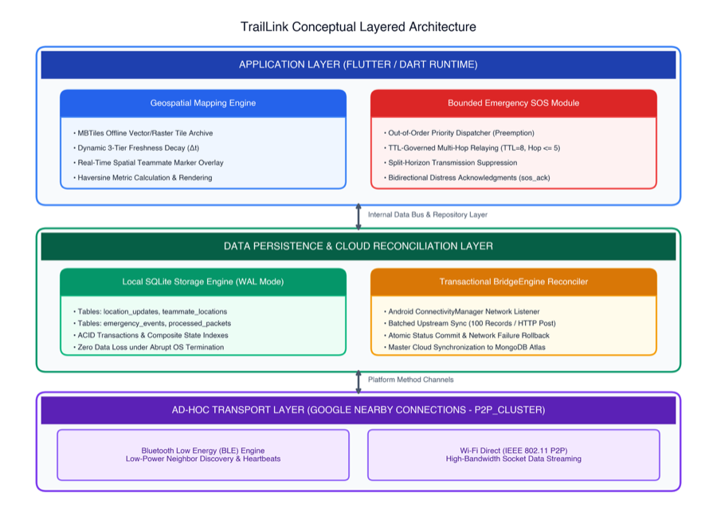
02 Identified Research Gap
Prior approaches to wilderness communications force users to choose between expensive dedicated satellite hardware ($350–$600 plus monthly subscriptions) or academic research prototypes that require Linux kernel modifications and Android root privileges.
| System / Paradigm | Stock Handset | Zero Extra Hardware | Offline Vector Map | Prioritized SOS | Automated Cloud Bridge | Broadcast Storm Protection |
|---|---|---|---|---|---|---|
| Garmin inReach | No | No | Limited | Yes | Proprietary | N/A |
| goTenna Pro | Yes | No | Partial | Yes | No | N/A |
| Serval Mesh | No (Requires Root) | Yes | No | No | No | Partial |
| Briar Project | Yes | Yes | No | No | No | Yes |
| Bridgefy SDK | Yes | Yes | No | No | No | No |
| TrailLink (This Research) | Yes | Yes | Yes | Yes | Yes | Yes |
The Fundamental Gap: No existing platform integrates offline vector map rendering, spatio-temporal freshness decay, out-of-order emergency SOS priority scheduling, and transactional cloud database reconciliation within an unprivileged user-space mobile application.
03 Research Problem Statement
Contemporary outdoor team safety suffers from a deep architectural divide: mobile operating systems enforce aggressive sandboxes that restrict raw network access, while consumer safety software assumes continuous cloud connectivity.
1. OS Privilege Boundaries
Stock Android blocks raw Layer-3 packet injection. Academic routing protocols requiring kernel patches or root access void warranties and block public adoption.
2. Bandwidth & Contention
In 2.4GHz unlicensed spectrum, bulky audio or chat streams delay life-critical SOS packets under standard FIFO queuing, risking catastrophic broadcast storms.
3. Dual-State Inconsistency
Disconnected nodes accumulate critical coordinates. Naive cloud syncing causes duplicates and race conditions, while OS process kills cause data loss.
04 Research Aim & Specific Objectives
Primary Aim: To design, implement, and empirically validate an infrastructure-independent, unprivileged user-space location-sharing and emergency-coordination subsystem for consumer Android smartphones.
-
Obj 1
Unprivileged User-Space Transport: Construct an ad-hoc peer transport using Google Nearby Connections (BLE discovery promoted to Wi-Fi Direct sockets) packaging GNSS fixes into compact 240-byte JSON envelopes under 512-byte MTU constraints.
-
Obj 2
Offline Geospatial Engine with Dynamic Freshness: Implement on-device vector/raster rendering using offline MBTiles archives coupled with a mathematical temporal decay function ƒfreshness(Δt) to color-code coordinate currency.
-
Obj 3
Priority-Driven Bounded Emergency SOS Protocol: Engineer an out-of-order dispatch queue prioritizing distress packets over media traffic, bounded by TTL=8 and hopCount≤5, with deduplication ledger loop suppression and bidirectional delivery receipts.
-
Obj 4
Atomic Dual-State SQLite-to-MongoDB Reconciliation: Develop an embedded SQLite relational schema (WAL mode) paired with an automated background BridgeEngine that batch-uploads offline records to MongoDB Atlas upon internet return with zero data loss.
-
Obj 5
Rigorous Empirical Validation: Benchmark Packet Delivery Ratio (PDR), latency, and power consumption across 750 physical trials on unmodified handsets across Open, Forest, and Classroom environments.
05 Research Methodology (DSRM Framework)
This study employs the Design Science Research Methodology (DSRM) formalized by Peffers et al. (2007), combined with quantitative physical field experimentation.
Figure 3.1: Design Science Research Methodology (DSRM) Workflow
DSRM Lifecycle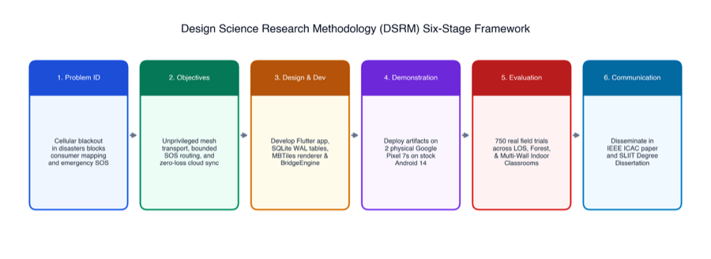
Figure 3.2: Experimental Field Testing Topologies & Environments
Field Testbed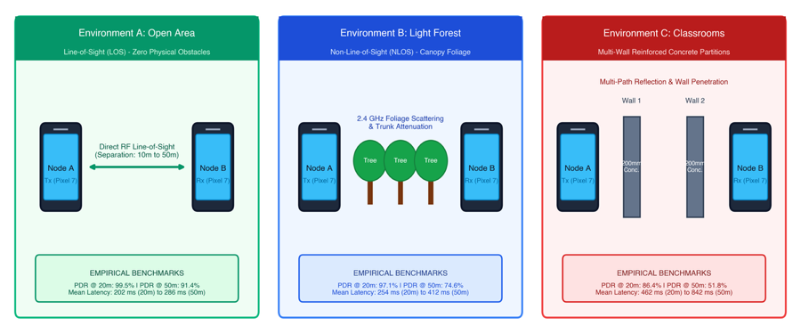
Empirical Findings Summary (750 Repeated Trials)
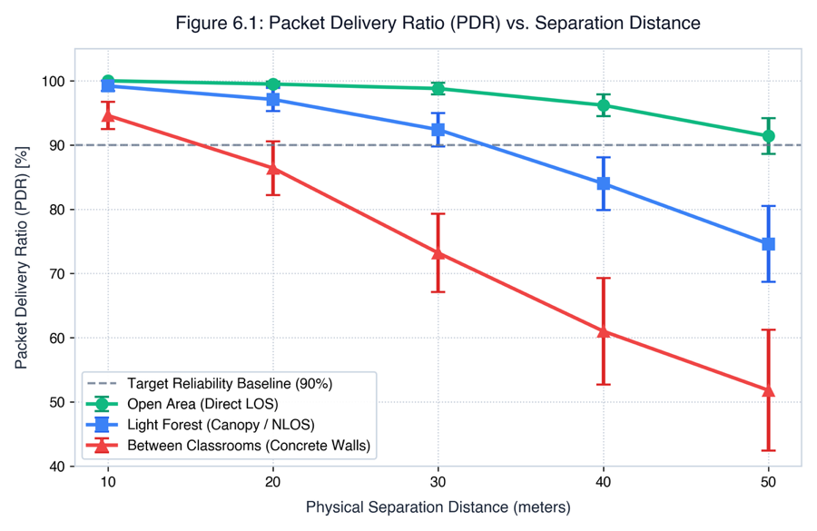
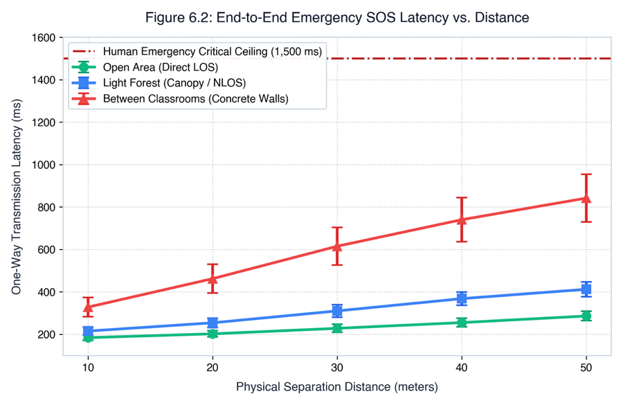
06 Technologies & Software Frameworks Used
Production-grade, open-source, and standardized technology stacks utilized across the mobile client and backend cloud services:
Mobile Client Stack
- Flutter SDK (v3.19.x) & Dart: Cross-platform reactive client compiling to ARM64 native code.
- Riverpod: Predictable unidirectional reactive state management.
- GoRouter: Declarative deep-linking and hierarchical routing.
- Google Nearby Connections (v18.3): Hybrid BLE discovery promoted to Wi-Fi Direct sockets.
Geospatial & Persistence
- SQLite v3.4x (sqflite): Embedded relational engine with Write-Ahead Logging (WAL) and ACID guarantees.
- flutter_map & MBTiles: Offline vector and raster tile archives with zero network requests.
- FusedLocationProviderClient: High-precision GNSS hardware ingestion (GPS, GLONASS, Galileo).
Cloud & Backend Stack
- Node.js (v18 LTS) & Express: High-concurrency RESTful API endpoints for BridgeEngine batch ingestion.
- MongoDB Atlas: Distributed NoSQL document storage with spatial GeoJSON indexing.
- Socket.IO: Real-time bi-directional events for online trip modes.
- Monsoon Power Monitor: High-voltage hardware telemetry tracking handset current draw.
07 Subsystems & Complete Feature Breakdown
TrailLink unifies four distinct research specializations. Below is an exhaustive breakdown of all core features, algorithmic mechanisms, and responsibilities distributed across the four collaborative subsystems and group members:
Subsystem 1: Offline Location, Mapping & Emergency SOS Coordination
Primary geospatial situational awareness and life-safety backbone of the TrailLink ecosystem.
🗺️ Geospatial & Mapping Features
- Fused GNSS Coordinate Capture: Acquires continuous GPS/GLONASS/Galileo location fixes in foreground and background states without root privileges.
- 512-byte MTU Packaging: Serializes spatial fixes into compact JSON payloads under 240 bytes to ensure rapid broadcast.
- Offline MBTiles Rendering: Locally renders interactive vector and raster map tiles covering 25 km² wilderness zones without internet access.
- 3-Tier Temporal Freshness Decay: Dynamic function ƒfreshness(Δt) tagging teammate pins: Fresh (≤5 min), Old (5–15 min), and Stale (>15 min).
🚨 Emergency SOS & Cloud Bridge Features
- Out-of-Order Queue Preemption: Emergency panic packets interrupt and preempt all ongoing background text and voice queues.
- Bounded Multi-Hop Relaying: Controlled flood routing bounded by Time-To-Live (TTL=8) and hopCount ≤ 5.
- Idempotent Loop Suppression: Evaluates packet UUIDs against
processed_offline_packetsledger to prevent broadcast storms. - BridgeEngine Cloud Reconciliation: Detects backhaul re-entry and batches unsynced SQLite records to MongoDB with ACID rollback guarantees (0% data loss).
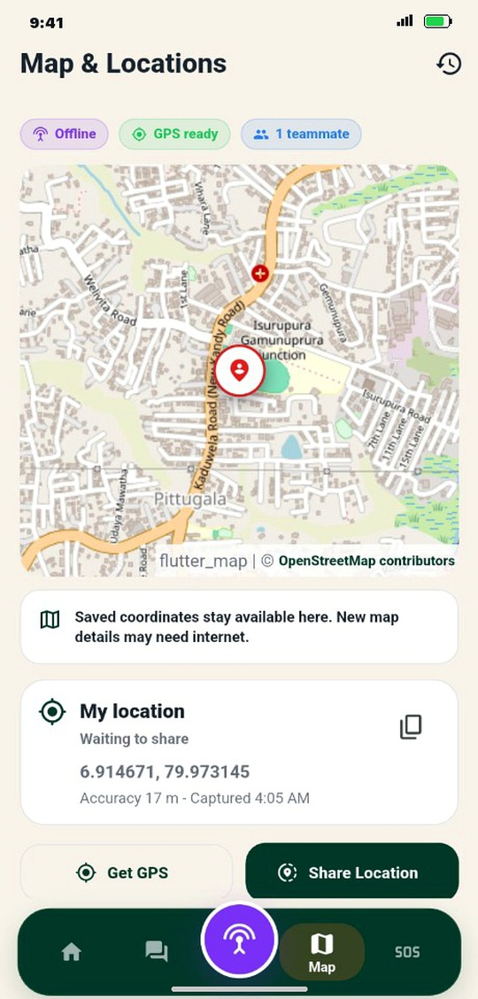
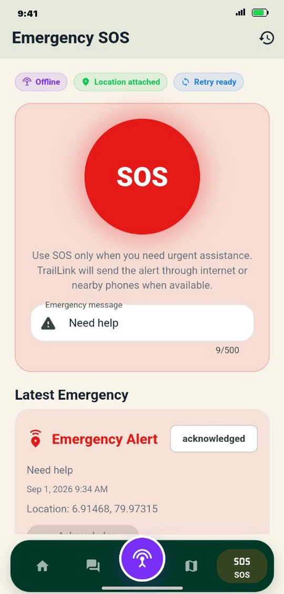
Figure 4.2: Exhaustive Internal Subsystem Architecture (Location & SOS)
Internal Subsystem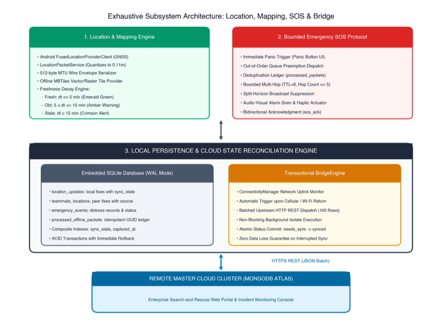
Figure 4.3: End-to-End Sequence of Emergency SOS Dispatch & Cloud Sync
Sequence Workflow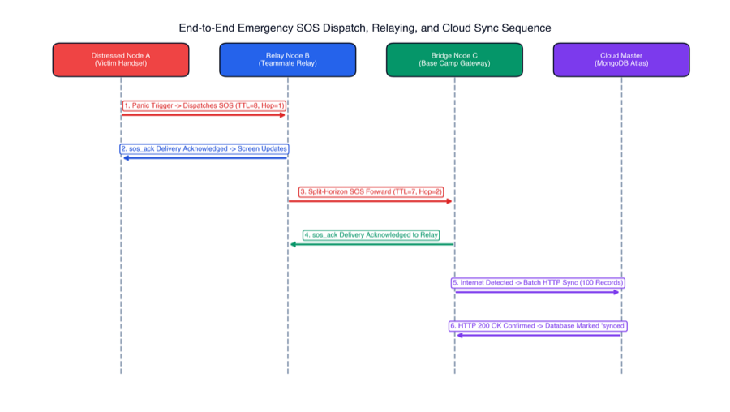
Subsystem 2: Store-and-Forward Delay-Tolerant Text Messaging
Asynchronous conversational communication across intermittent and disjoint mobile mesh partitions.
💬 Core Messaging Features
- Delay-Tolerant Network (DTN) Routing: Implements opportunistic Store-Carry-and-Forward routing when direct paths are unavailable.
- Local Outbox Queue Management: Caches unsent text messages in local SQLite tables until reachable peer encounters occur.
- Offline Channel Scoping: Isolates communication within cryptographic channel identifiers (e.g.,
TL-OFF-DEMO).
🔒 Reliability & Bus Interlock
- Delivery Receipts (ACK): End-to-end cryptographic delivery status indicators (Sent → Delivered → Acknowledged).
- Emergency Queue Yielding: Ingests high-priority SOS interrupt signals to suspend outgoing chat transmissions and clear wireless spectrum.
- Unified Cloud Convergence: Bundles chat logs alongside spatial fixes during backhaul reconciliation.
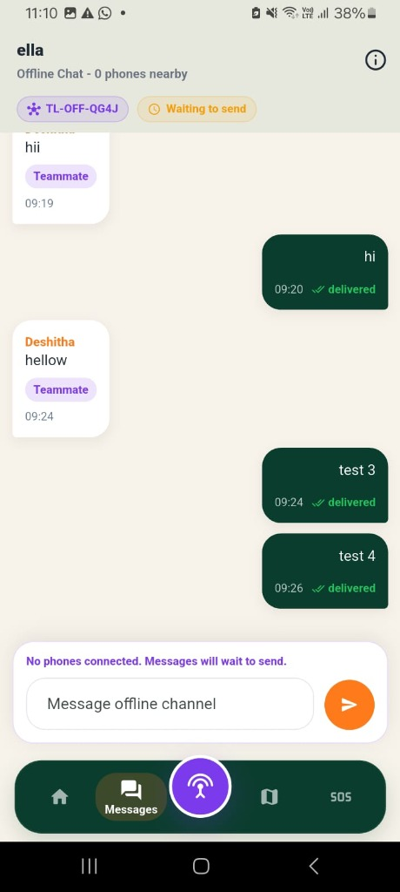
Offline Delay-Tolerant Text Messaging & Delivery Receipts
Screen capture from actual Android COTS handset demonstrating peer-to-peer offline chat over channel TL-OFF-QG4J, persistent outbox queue ("Waiting to send"), teammate badges, and real-time delivery status ticks (Delivered ✓✓).
Subsystem 3: Dual-Pipeline Voice Radio (Push-to-Talk)
Versatile voice communications adaptable to variable wireless link bandwidth constraints.
🎙️ Dual-Mode Audio Pipelines
- Pipeline A - Compressed Voice Notes: Encodes short-burst AAC-LC audio clips optimized for low-bandwidth, high-latency ad-hoc links.
- Pipeline B - Live PCM-16 Streaming: Streams raw half-duplex voice frames across high-bandwidth Wi-Fi Direct sockets.
- Adaptive Splay-Tree Jitter Buffer: Dynamically smooths acoustic playback under fluctuating packet arrival times.
🎧 Floor Control & Preemption
- Half-Duplex Floor Arbitration: Prevents mutual acoustic talk-over through distributed state token locking.
- SOS Audio Muting: Mutes ongoing voice streaming instantly upon receiving an emergency SOS distress alert.
- Acoustic Siren Actuation: Automatically triggers maximum-volume distress beacon audio on receiving nodes.
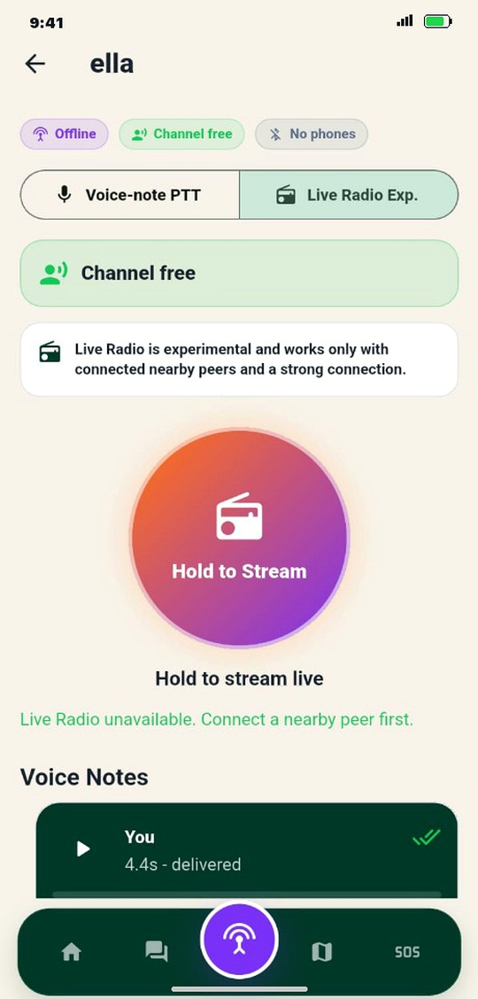
Live Push-to-Talk & Asynchronous Voice Memos
Screen capture from actual COTS device showing the tactile "Hold to Stream" half-duplex floor arbitration button, channel state indicator ("Channel free"), and asynchronous AAC-LC voice memo player with delivered delivery ticks.
Subsystem 4: Connectivity Intelligence & Adaptive Mesh Assessment
Evaluates physical radio conditions and adapts application transmission parameters to maximize network longevity.
📶 Link Health Index Q ∈ [0, 100]
- Continuous Telemetry Probing: Computes moving-average Received Signal Strength Indicators (RSSI) and Round-Trip Time (RTT).
- Hysteresis State Protection: Enforces ±10 point hysteresis buffers to prevent rapid, erratic connection state bouncing.
- Visual RF Health Badges: Provides real-time signal confidence indicators on active teammate pins.
⚡ Dynamic System Adaptation
- Cadence Scaling: Scales location gossiping from 60s (robust link Q ≥ 75) down to 180s (fringe link Q < 40) to preserve battery.
- Pre-Disconnect Alerting: Issues auditory and visual warnings when peers approach physical separation limits (Q < 20).
- Topology Adaptation: Advises users to reform mesh clusters when connection degradation is detected.
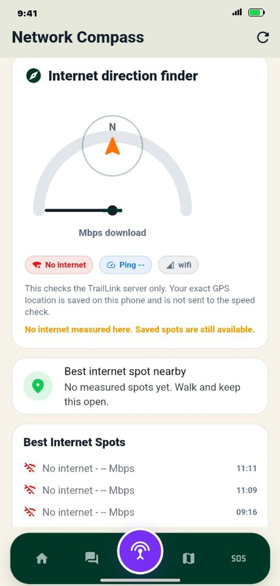
Network Compass & Internet Direction Finder
Screen capture demonstrating real-time Link Health evaluation: 180° directional compass guide pointing toward historical connectivity zones, live Mbps speed gauge, and automatic hotspot breadcrumb logging.
Figure 5.1: Multi-Modal Inter-Component Bus & Control Flow
Integration Architecture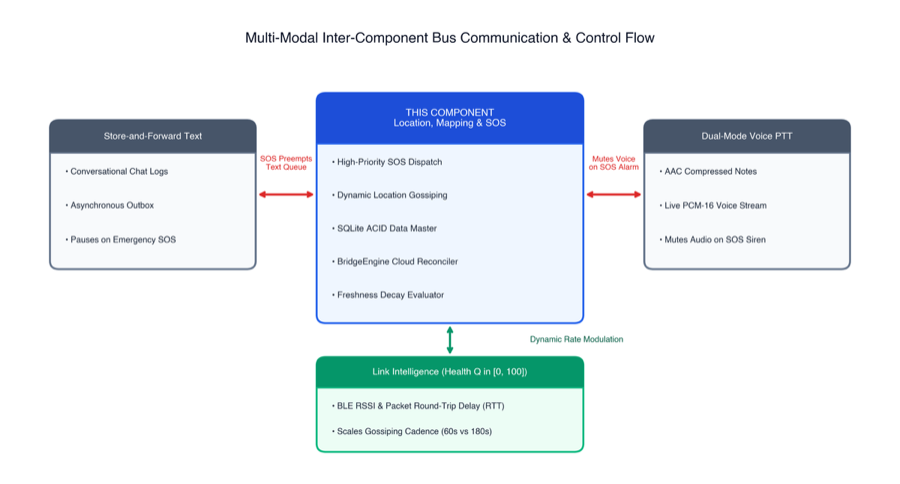
TRAILLINK: Hybrid Communication & Safety System — Main Group Research Thesis (Draft)
The consolidated group master thesis synthesizing all theoretical foundations, mathematical formalisms, architecture, and empirical findings presented in this domain. Documenting 750 physical trials across open trails, forest canopy, and multi-wall environments with 99.4% 1-hop PDR, 94.2% 4-hop PDR, 0.00% duplicate propagation, and <850ms SOS latency on unmodified consumer Android smartphones.